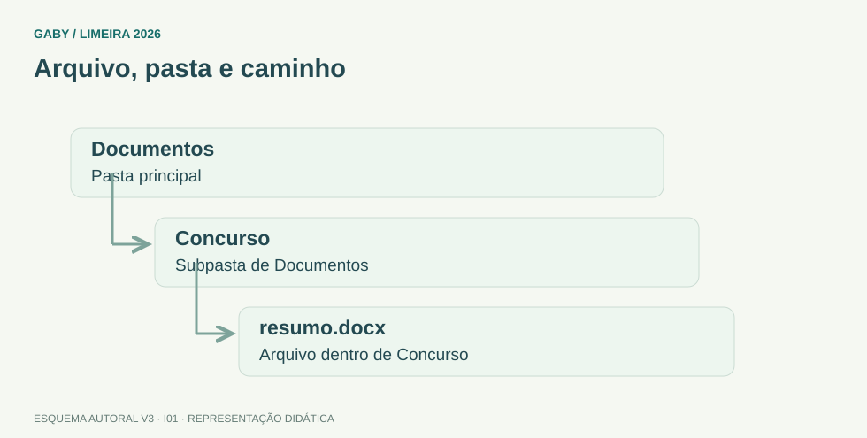

Objetivos do módulo
- Distinguir arquivo, pasta, diretório, unidade e caminho.
- Entender copiar, mover, renomear, excluir e restaurar.
- Reconhecer extensões e associações de arquivos.
Arquivo, pasta e caminho

Descrição em texto do esquema
- Documentos: Pasta principal
- Concurso: Subpasta de Documentos
- resumo.docx: Arquivo dentro de Concurso
Oficina visual · aplique o esquema
No caminho C:\Estudos\Limeira\resumo.docx, identifique unidade, pastas, nome e extensão.
Atividade autoral complementar da V3. Registre sua resposta; a resolução está no arquivo de gabarito e revisão.
Mapa do conteúdo
1. Arquivo, pasta e caminho
Arquivo é uma unidade de informação gravada, normalmente identificada por nome e extensão. Pasta ou diretório é um contêiner lógico que organiza arquivos e outras pastas. Caminho descreve a localização, por exemplo C:\Usuários\Gaby\Documentos\prova.pdf.
A raiz de uma unidade é seu nível superior. Pastas podem conter subpastas em estrutura hierárquica.
2. Extensões
| Extensão | Tipo típico |
|---|---|
| .docx | Documento do Word |
| .xlsx | Pasta de trabalho do Excel |
| .pptx | Apresentação do PowerPoint |
| Documento em formato PDF | |
| .zip | Arquivo compactado |
| .jpg/.png | Imagem |
3. Copiar x mover
Copiar cria uma segunda instância dos dados no destino, preservando a origem. Mover altera a localização lógica. Arrastar entre pastas da mesma unidade costuma mover por padrão; entre unidades diferentes, costuma copiar — mas prova pode focar nos comandos explícitos, que são menos ambíguos.
4. Exclusão e Lixeira
A exclusão comum de arquivo local geralmente envia para a Lixeira, de onde pode ser restaurado enquanto não removido definitivamente. Shift+Delete costuma excluir sem enviar à Lixeira. Em mídias e contextos específicos o comportamento pode variar.
5. Propriedades e pesquisa
Propriedades exibem tipo, tamanho, datas, local e atributos. O Explorador de Arquivos oferece busca, ordenação e modos de exibição. É importante diferenciar nome, extensão e caminho completo.
Exemplos resolvidos passo a passo
Exemplo 1
Situação: Ao copiar “relatorio.docx” de Documentos para Desktop, o que acontece?
Exemplo 2
Situação: O que representa “C:\Provas\2026\edital.pdf”?
Exemplo 3
Situação: Qual diferença prática entre Delete e Shift+Delete?
Pegadinhas e erros frequentes
- Confundir atalho com cópia do arquivo original.
- Achar que renomear muda o conteúdo.
- Confundir extensão com nome inteiro.
- Assumir que todo Delete é irreversível.
Resumo de prova
- Arquivo guarda dados; pasta organiza.
- Extensão sugere formato/associação.
- Copiar preserva origem; mover muda localização.
- Shift+Delete normalmente ignora a Lixeira.
- Caminho identifica a localização.
Exercícios do módulo
Resolva sem consultar o arquivo de gabarito. As questões são autorais e construídas para treinar os conceitos do edital.
- Excel
- Word
- PowerPoint
- imagem JPEG
Fontes: Microsoft — Explorador de Arquivos no Windows · Microsoft — Atalhos de teclado no Windows.
- apagar o original
- apenas renomear
- criar atalho necessariamente
- criar uma cópia no destino preservando o original
Fontes: Microsoft — Explorador de Arquivos no Windows · Microsoft — Atalhos de teclado no Windows.
- somente atalhos
- nenhum item
- arquivos e subpastas
- somente arquivos
Fontes: Microsoft — Explorador de Arquivos no Windows · Microsoft — Atalhos de teclado no Windows.
- abre propriedades
- exclui sem enviar à Lixeira
- copia
- renomeia
Fontes: Microsoft — Explorador de Arquivos no Windows · Microsoft — Atalhos de teclado no Windows.
- extensão
- pasta
- unidade
- caminho
Fontes: Microsoft — Explorador de Arquivos no Windows · Microsoft — Atalhos de teclado no Windows.
- o conteúdo automaticamente
- a data de nascimento do usuário
- a unidade física
- o nome, não o conteúdo
Fontes: Microsoft — Explorador de Arquivos no Windows · Microsoft — Atalhos de teclado no Windows.
- uma fórmula
- um endereço de e-mail
- um caminho de arquivo
- uma URL web
Fontes: Microsoft — Explorador de Arquivos no Windows · Microsoft — Atalhos de teclado no Windows.
- à nuvem obrigatoriamente
- ao local original
- ao Desktop sempre
- ao navegador
Fontes: Microsoft — Explorador de Arquivos no Windows · Microsoft — Atalhos de teclado no Windows.
- compactado
- executável necessariamente
- planilha
- atalho
Fontes: Microsoft — Explorador de Arquivos no Windows · Microsoft — Atalhos de teclado no Windows.
- senha de qualquer usuário
- conteúdo de memória RAM
- senha do Windows
- tamanho e datas
Fontes: Microsoft — Explorador de Arquivos no Windows · Microsoft — Atalhos de teclado no Windows.
Quando terminar, abra Informática 01 - Windows - Arquivos, Pastas e Diretórios - Gabarito e Revisão.
Checklist de domínio
- ☐ Distinguir arquivo, pasta, diretório, unidade e caminho.
- ☐ Entender copiar, mover, renomear, excluir e restaurar.
- ☐ Reconhecer extensões e associações de arquivos.
Meta do módulo: 80% ou mais nas questões, sem depender de consulta.
Referências e conteúdos auxiliares
- Microsoft — Explorador de Arquivos no WindowsOperações com arquivos e pastas. Observe a versão do Windows e a seção aplicável.
- Microsoft — Atalhos de teclado no WindowsConsulta de atalhos e contextos de uso no Windows.
Referências externas de apoio consultadas para a V3 em 27/09/2026. A origem das questões é o material autoral do projeto; estes links não indicam que uma instituição publicou ou validou os exercícios. As páginas externas precisam de internet. Em informática, confira a versão do programa; em legislação, observe o recorte e as regras de atualização do edital.